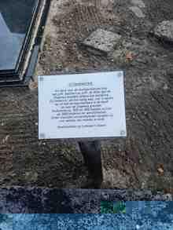

ما هو موثق مباشرة؟
اللوحة المحلية تذكر باربييرس مع دي فريس وتصف عملهما مع الأمهات والأطفال. أما شاهد القبر فيحفظ بوضوح عبارة «كانت حياتها خدمة».
قابلة ارتبط اسمها بذاكرة الولادة والرعاية في شام إلى جانب تيتجه دي فريس. يعتمد هذا الملف على الصور الميدانية الأصلية للقبر ولوحة الشكر، ولا يثبت من النقش الباهت تفاصيل شخصية لا يمكن قراءتها بثقة.


اللوحة المحلية تذكر باربييرس مع دي فريس وتصف عملهما مع الأمهات والأطفال. أما شاهد القبر فيحفظ بوضوح عبارة «كانت حياتها خدمة».
بعض حروف الاسم الأول والتواريخ على القبر باهتة في الصورة؛ لذلك لا يثبت LuxDot هنا قراءة غير مؤكدة، وتبقى الصورة نفسها متاحة بوصفها الدليل الأصلي.
المصدر البصري: تصوير ميداني أصلي لـ LuxDot — شام، أغسطس 2026.
ملف مرتبط: تيتجه دي فريس — شريكة الخدمة في ذاكرة شام ←